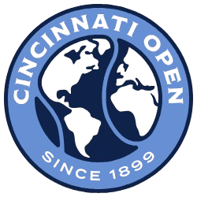

Cleaning support built for crowds
Flexible staffing, real-time coordination, rapid response, and consistent execution across high-traffic public spaces.

Built to handle high-traffic environments
Anuva has supported cleaning operations at the Cincinnati Open in Mason, Ohio, for two consecutive years as a subcontracted service provider through City Wide.
Large venues and major events require a different level of coordination. Crowd volume, continuous cleaning requirements, changing schedules, tight turnaround times, and highly visible public spaces demand crews that can respond quickly and operate as part of a larger service team.
Anuva has supported cleaning operations at the Cincinnati Open in Mason, Ohio, for two consecutive years as a subcontracted service provider through City Wide. This experience demonstrates Anuva’s ability to support demanding, highly visible, high-traffic environments where timing and execution matter.
Event & venue services
- Pre-event cleaning
- Continuous event-day cleaning
- Restroom monitoring
- High-traffic area cleaning
- Waste & debris support
- Hospitality & VIP area cleaning
- Post-event cleanup
- Multi-day event staffing